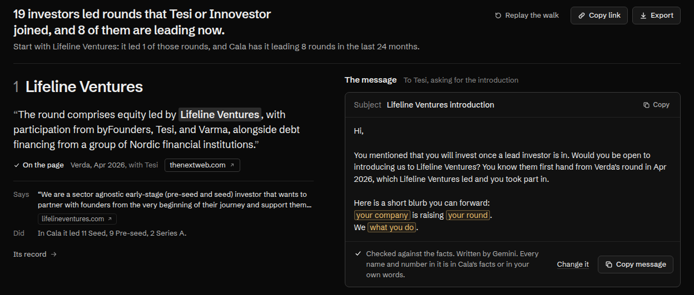
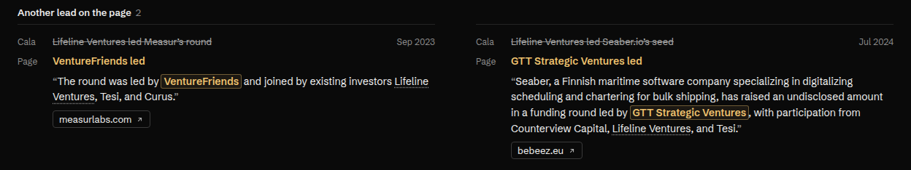

Soft Yes finds the investor who could lead your round, starting from the ones who said they'd follow.
You still need the one investor who sets the price. Investor lists don't tell you who that is for your round.
That investor has already done a deal with yours, and yours can make the intro.


From one investor it did no better than chance. So the form asks for two, and the misses are on the site.
Cala gives the rounds, who joined, who led and the page behind each fact.
Oxylabs reads what a fund says about itself, next to what it did.
Gemini writes the message. Code drops any draft with a name or number that isn't in the facts.